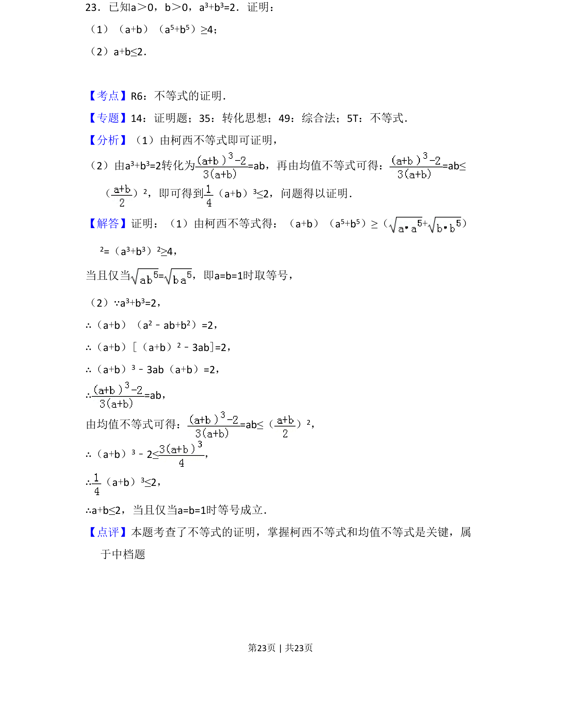
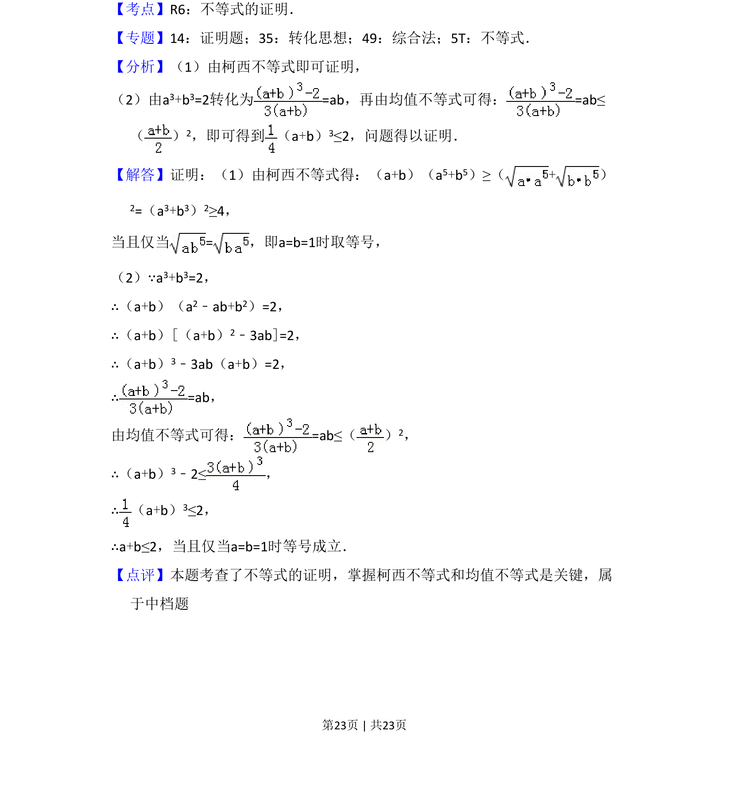

考点：不等式证明 柯西不等式 均值不等式

该题考查利用柯西不等式和均值不等式证明不等式，涉及代数变形与等号条件。

📄 原 PDF 第 23 页：
素材/真题/吉林/2008-2024·（吉林）数学高考真题/2017年高考数学试卷（理）（新课标Ⅱ）（解析卷）.pdf
23．已知a＞0，b＞0，a3+b3=2．证明： （1）（a+b）（a5+b5）≥4； （2）a+b≤2．
【考点】R6：不等式的证明．菁优网版权所有 【专题】14：证明题；35：转化思想；49：综合法；5T：不等式． 【分析】（1）由柯西不等式即可证明， （2）由a3+b3=2转化为=ab，再由均值不等式可得：=ab≤ （ ） 2，即可得到 （a+b） 3≤2，问题得以证明． 【解答】证明：（1）由柯西不等式得：（a+b）（a5+b5）≥（+） 2=（a3+b3）2≥4， 当且仅当=，即a=b=1时取等号， （2）∵a3+b3=2， ∴（a+b）（a2﹣ab+b2）=2， ∴（a+b）[（a+b）2﹣3ab]=2， ∴（a+b）3﹣3ab（a+b）=2， ∴=ab， 由均值不等式可得：=ab≤（ ） 2， ∴（a+b）3﹣2≤， ∴（a+b） 3≤2， ∴a+b≤2，当且仅当a=b=1时等号成立． 【点评】本题考查了不等式的证明，掌握柯西不等式和均值不等式是关键，属 于中档题